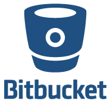
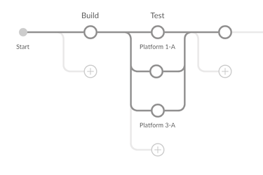
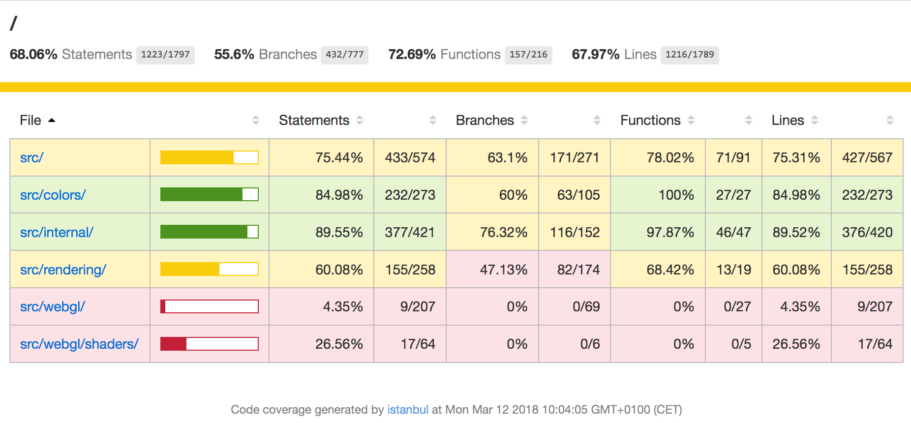
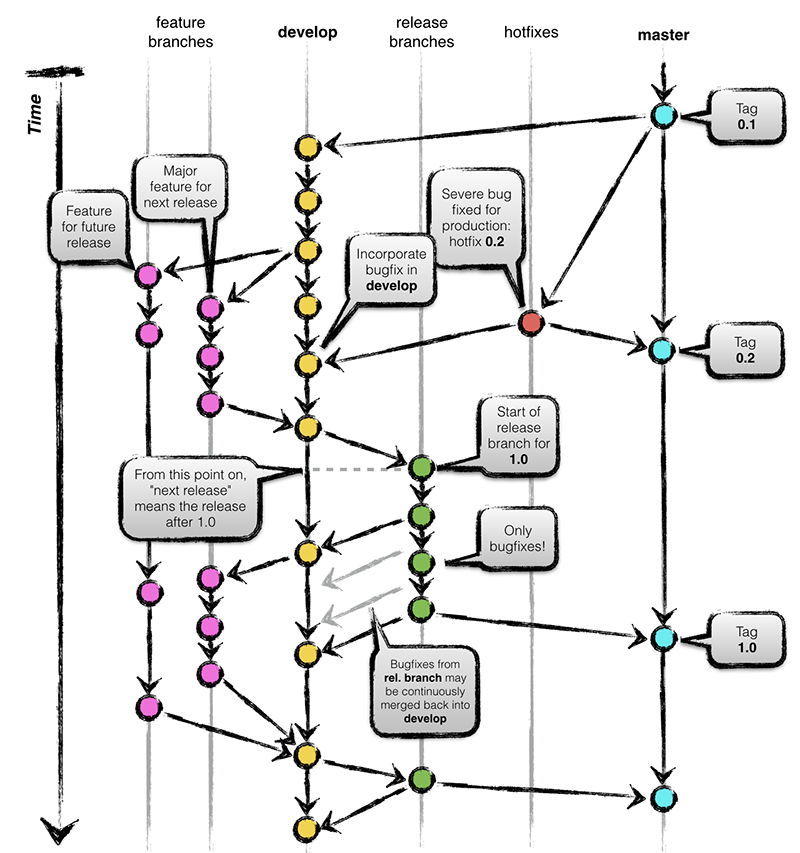
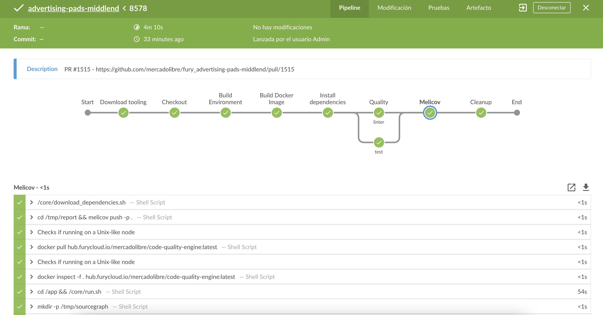
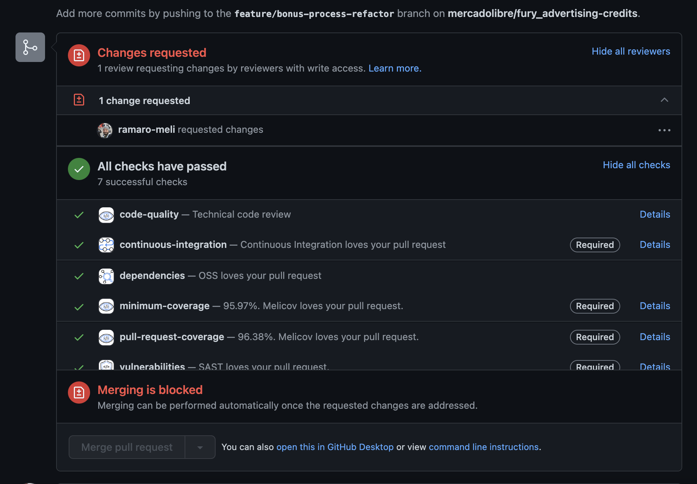

Continuous Integration & Continuous Delivery in practice
Rodrigo Amaro
30/06/2021
Hello!
Soy Rodrigo Amaro
Soy sansano! Entré a Telemática el 2005
Llevo un par de años trabajando en programación
Y ahora trabajo en Mercado Libre como Technical Lead
Continuous Integration ??
A little of history...
.. a long long time ago
Bob es un desarrollador y comienza su primer trabajo
Primer proyecto: Modificar un sitio web para un diario conocido

Usando tecnologías de punta...

Y GIT? No, se usaba una carpeta de windows compartida...
Y el ambiente de desarrollo? Era maquina virtual...
Y como se corrian los tests? Solo con el navegador...
Problemas? Ninguno!
¿Y si queremos que otras personas trabajen con nosotros?
¿Y si queremos desarrollar nuestros cambios por separado?
¿Y como podemos guardar el sitio que antes funcionaba?
¿Y si no nos acordabamos los archivos que modificamos?
¿Y si mi cambio requiere una modificación en la plataforma?
Y como lo hacen ellos?


Source: https://www.appcentrica.com/the-rise-of-microservices/
Historia basada en hechos reales...
Continuous Integration
“... a software development practice where members of a team integrate their work frequently, usually each person integrates at least daily — leading to multiple integrations per day. Each integration is verified by an automated build (including test) to detect integration errors as quickly as possible.”
— Martin Fowler
Glosario
Integración: El acto de combinar los archivos modificados por desarrollo en el proyecto principal
Build: Una serie de actividades para generar y probar el software
Version Control Repository



CI Servers & tools
An overview

Common practices
Commit code frequently

Don´t commit broken code

Fix broken builds immediately

Write automated developer tests
All tests and inspections must pass

Run private builds

Pipelines
What it this?
Example: React App
Building software
package.json
{
"name": "my-app",
"version": "0.1.0",
"private": true,
"dependencies": {
"@testing-library/jest-dom": "^5.14.1",
"@testing-library/react": "^11.2.7",
"@testing-library/user-event": "^12.8.3",
"react": "^17.0.2",
"react-dom": "^17.0.2",
"react-scripts": "4.0.3",
"web-vitals": "^1.1.2"
},
"scripts": {
"start": "react-scripts start",
"build": "react-scripts build --stats",
"test": "react-scripts test",
"eject": "react-scripts eject"
},
"eslintConfig": {
"extends": [
"react-app",
"react-app/jest"
]
},
"browserslist": {
"production": [
">0.2%",
"not dead",
"not op_mini all"
],
"development": [
"last 1 chrome version",
"last 1 firefox version",
"last 1 safari version"
]
}
}
building the app
npm install
npm run build
Pero nuestro servidor de CI necesita NodeJS!
building the app with docker
FROM node:14-alpine
RUN mkdir /app
WORKDIR /app
COPY . /app/
RUN npm install
RUN npm run build
Testing software
testing the app
npm run test
npm run e2e
Sending coverage

Run validations
EsLint
module.exports = {
env: {
browser: true,
es2021: true,
jest: true
},
extends: [
'plugin:react/recommended',
'airbnb',
],
parserOptions: {
ecmaFeatures: {
jsx: true,
},
ecmaVersion: 12,
sourceType: 'module',
},
plugins: [
'react',
],
rules: {
"react/jsx-filename-extension": [1, { "extensions": [".js", ".jsx"] }],
}
};
npm run lint
Pipelines en Jenkins
pipeline {
agent {
docker {
image 'node:6-alpine'
args '-p 3000:3000'
}
}
stages {
stage('Build') {
steps {
sh 'npm install'
sh 'npm run build'
}
}
stage('Test') {
steps {
sh 'npm run test'
}
}
}
}
Example in Mercadolibre
branching model

jenkins ci

pull request driven development

Valor de CI
Reduce risk
Reduce repetitive manual processes
Generate deployable software at any time and at any place
Enable better project visibility
Establish greater confidence in the software product from the development team
Continuous integration vs. continuous delivery vs. continuous deployment
Continuous integration
Integrar tu codigo continuamente
Continuous delivery
Integrar tu codigo continuamente y además generar artefactos que pueden ser deployados en cualquier momento
Continuando...
Generating the artifact
Using docker
FROM nginx:1.15
COPY /app/build/ /usr/share/nginx/html
COPY /nginx.conf /etc/nginx/conf.d/default.conf
docker build -t react-app .
docker tag react-app mycompany/react-app-demo:0.0.1
docker push
Example in Mercadolibre...again
branching model

Continuous deployment
Integrar tu codigo continuamente y además generar artefactos que pueden ser deployados en cualquier momento y deployarlos de manera automática

https://www.atlassian.com/continuous-delivery/principles/continuous-integration-vs-delivery-vs-deployment